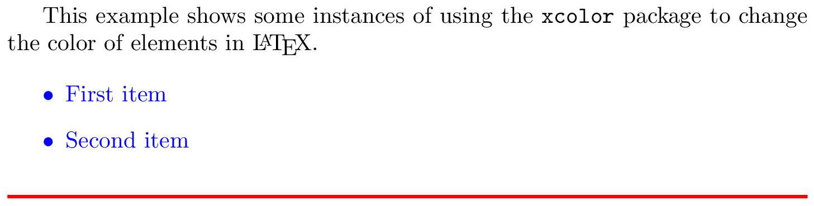
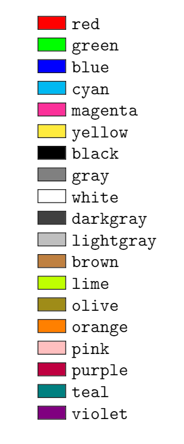
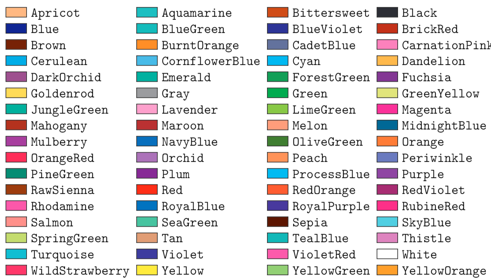
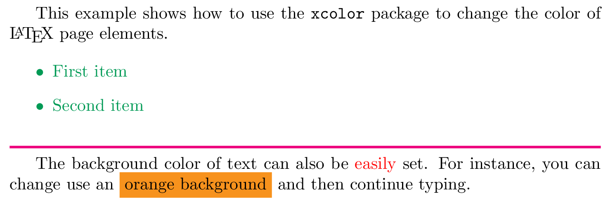
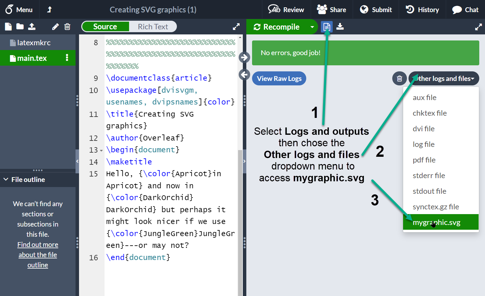
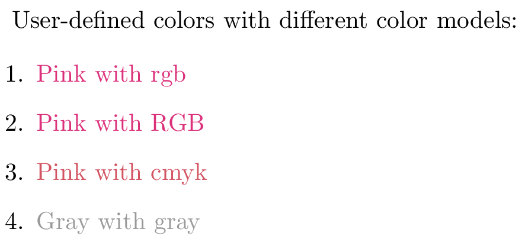
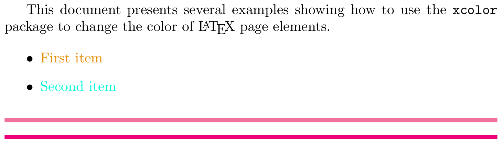
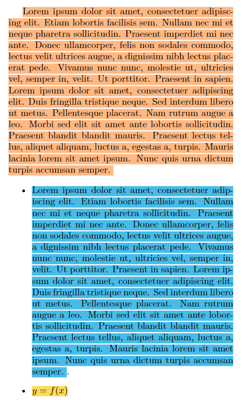

Using colors in LaTeX
Introduction
This article explains how to use color in your LaTeX document via the color or xcolor packages. Note that user-level documentation of the color package is contained in The LaTeX standard graphics bundle.
Both packages provide a common set of commands for color manipulation, but xcolor is more flexible and supports a larger number of color models, so is the recommended approach.
We’ll start with the following example:
\documentclass{article}
\usepackage{xcolor}
\begin{document}
This example shows some instances of using the \texttt{xcolor} package
to change the color of elements in \LaTeX.
\begin{itemize}
\color{blue}
\item First item
\item Second item
\end{itemize}
\noindent
{\color{red} \rule{\linewidth}{0.5mm}}
\end{document}
Open this xcolor example in Overleaf
This example produces the following output:

In this example, the package xcolor is imported with
\usepackage{xcolor}
then the command \color{blue} sets the blue color for the current block of text. In this case for the itemize environment.
The code to typeset the horizontal line created by \rule{\linewidth}{0.5mm} is contained in a group, delimited by { and }, in order to keep the effects of the \color{red} local to that group.
Named colors provided by the xcolor package
As noted in the xcolor package documentation, the following named colors are always available without needing to load any package options:

Accessing additional named colors
Additional named colors can be accessed via the following xcolor package options:
dvipsnames: loads 68 named colors (CMYK)svgnames: loads 151 named colors (RGB)x11names: loads 317 named colors (RGB)
For example, if you write
\usepackage[dvipsnames]{xcolor}
you can access the following named colors:

Refer to the xcolor package documentation for tabulated lists of colors provided by the svgnames and x11names options.
Example usage
The following example uses named colors loaded via the dvipsnames option.
\documentclass{article}
\usepackage[dvipsnames]{xcolor}
\begin{document}
This example shows how to use the \texttt{xcolor} package
to change the color of \LaTeX{} page elements.
\begin{itemize}
\color{ForestGreen}
\item First item
\item Second item
\end{itemize}
\noindent
{\color{RubineRed} \rule{\linewidth}{0.5mm}}
The background color of text can also be \textcolor{red}{easily} set. For
instance, you can change use an \colorbox{BurntOrange}{orange background} and then continue typing.
\end{document}
Open this xcolor example in Overleaf
This example produces the following output:

Two new commands are also used in the example:
\textcolor{red}{easily}: Changes the color of inline text. This command takes two parameters, the color to use and the text whose color is changed. In the example the wordeasilyis printed inred.
\colorbox{BurntOrange}{orange background}: Changes the background color of the text passed in as the second argument. In the example above, the wordsorange backgroundare typeset on a background color ofBurntOrange.
Loading and using named colors in the color package
You can also use the color package and load named colors via its usenames and dvipsnames package options:
\usepackage[usenames,dvipsnames]{color}
The following code uses the color package to apply the same named colors used in the previous xcolor package example.
\documentclass{article}
\usepackage[usenames,dvipsnames]{color} %using the color package, not xcolor
\begin{document}
This example shows how to use the \texttt{\bfseries color} package
to change the color of \LaTeX{} page elements.
\begin{itemize}
\color{ForestGreen}
\item First item
\item Second item
\end{itemize}
\noindent
{\color{RubineRed} \rule{\linewidth}{0.5mm}}
The background color of text can also be \textcolor{red}{easily} set. For
instance, you can change use an \colorbox{BurntOrange}{orange background} and then continue typing.
\end{document}
Open this color example in Overleaf
This example produces the same output as the previous xcolor version:
Drivers and color
Use of color when typesetting text or math was not part of the original design of TeX; instead, use/application of color was delegated to external “drivers” which converted TeX’s original output file format (DVI) into PostScript or PDF. In order for color to work, driver-specific instructions had to be “injected” into TeX’s output by using a built-in TeX command called \special whose job is simply to allow code/data to pass through the typesetting process and become embedded into the output file. When the chosen driver (software) processed the typeset output it would detect the embedded code/data and act upon it to achieve whatever the user intended—such as the use of color.
Times have changed, and PDF is now by far the most common output format used by TeX engines, long supplanting the use of legacy DVI drivers and creation of PostScript. Users also have a greater choice of TeX engine to use for typesetting their LaTeX documents, most notably pdfTeX, XeTeX or LuaTeX/LuaHBTeX, so it is still important to take account of differences in those TeX engines—ensuring the correct mechanisms are used to insert color data (PDF instructions) into their PDF files. To support and accommodate the legacy DVI output format and the wider environment of TeX engines and workflows in use, you can, if required, configure the color or xcolor packages to use a particular “driver” so that LaTeX will generate color data using using the appropriate method.
Drivers for color and xcolor
The color package provides out-of-the-box support for the following driver options:
dvipdfmx,dvips,dvisvgm,luatex,pdftexandxetex
There are other options as described in the color package documentation.
The xcolor package provides the following driver options:
dvips,xdvi,dvipdf,dvipdfm,dvipdfmx,luatex,pdftex,dvipsone,dviwindo,emtex,dviwin,oztex,textures,pctexps,pctexwin,pctexhp,pctex32,truetex,tcidvi,vtexandxetex.
Automatic color driver detection
When typesetting your document LaTeX reads a configuration file called color.cfg which contains code that can determine if you are running pdfTeX, XeTeX or LuaTeX and automatically loads the appropriate driver (.def file) for you, so you don’t need to specify the driver package option for those engines.
More advanced example using the dvisvgm driver to create an SVG file
The following example uses the color package with options that load named colors and the dvisvgm driver to output color definitions/data using SVG code:
\usepackage[dvisvgm, usenames, dvipsnames]{color}
Specifically, the output file typeset by Overleaf is converted to SVG using a program called dvisvgm, which is part of TeX Live and available on our servers. To run dvisvgm, after the page is typeset, we use a latexmkrc file which is created when you open the following code in Overleaf:
\documentclass{article}
\usepackage[dvisvgm, usenames, dvipsnames]{color}
\title{Creating SVG graphics}
\author{Overleaf}
\begin{document}
\maketitle
Hello, {\color{Apricot}in Apricot} and now in {\color{DarkOrchid} DarkOrchid} but perhaps it might look nicer if we use {\color{JungleGreen}JungleGreen}---or may not?
\end{document}
Open this example to create an SVG file
Once Overleaf has finished compiling you can access the SVG graphic, called mygraphic.svg, by selecting Logs and outputs and choosing the Other logs and files dropdown list:

Creating your own colors
It is possible to define your own colors, the manner in which the color is defined depends on the preferred color model. The following example uses 4 color models.
\documentclass{article}
\usepackage[dvipsnames]{xcolor}
\definecolor{mypink1}{rgb}{0.858, 0.188, 0.478}
\definecolor{mypink2}{RGB}{219, 48, 122}
\definecolor{mypink3}{cmyk}{0, 0.7808, 0.4429, 0.1412}
\definecolor{mygray}{gray}{0.6}
\begin{document}
User-defined colors with different color models:
\begin{enumerate}
\item \textcolor{mypink1}{Pink with rgb}
\item \textcolor{mypink2}{Pink with RGB}
\item \textcolor{mypink3}{Pink with cmyk}
\item \textcolor{mygray}{Gray with gray}
\end{enumerate}
\end{document}
This example produces the following output:

The command \definecolor takes three parameters: the name of the new color, the model, and the color definition. Roughly speaking, each number represent how much of each color you add to the mix that makes up the final color.
rgb: Red, Green, Blue. Three comma-separated values between 0 and 1 define the components of the color.RGB: The same asrgb, but the numbers are integers between 0 and 255.cmyk: Cyan, Magenta, Yellow and blacK. Comma-separated list of four numbers between 0 and 1 that determine the color according to the subtractive CMYK model used by commercial printers.gray: Grey scale. A single number between 0 and 1.
In the example, mypink1, mypink2 and mypink3 define the same color but for different models. You can actually see that the one defined by cmyk is slightly different.
Colors defined by either model can later be used within your document not only to set the color of the text, but for any other element that takes a color as parameter, for instance tables (you must add the table option to xcolor), graphic elements created with TikZ, plots, vertical rulers in multicolumn documents and code listings.
xcolor-only color models
The xcolor package provides additional commands which provide support for more color models and friendly color mixing, as demonstrated in the following example:
\documentclass{article}
\usepackage[dvipsnames]{xcolor}
\colorlet{LightRubineRed}{RubineRed!70}
\colorlet{Mycolor1}{green!10!orange}
\definecolor{Mycolor2}{HTML}{00F9DE}
\begin{document}
This document presents several examples showing how to use the \texttt{xcolor} package
to change the color of \LaTeX{} page elements.
\begin{itemize}
\item \textcolor{Mycolor1}{First item}
\item \textcolor{Mycolor2}{Second item}
\end{itemize}
\noindent
{\color{LightRubineRed} \rule{\linewidth}{1mm}}
\noindent
{\color{RubineRed} \rule{\linewidth}{1mm}}
\end{document}
This example produces the following output:

Three new colors are defined in this example, each one in a different manner.
\colorlet{LightRubineRed}{RubineRed!70}: A new color namedLightRubineRedis created, this color has 70% the intensity of the originalRubineRedcolor. You can think of it as a mixture of 70% RubineRed and 30% white. Defining colors like this lets you derive different tints of a main color—common practice in corporate branding. In the example, you can see the originalRubineRedand the newLightRubineRedused in two consecutive horizontal rules.\colorlet{Mycolor1}{green!10!orange}: A color namedMycolor1is created with 10% green and 90% orange.\definecolor{Mycolor2}{HTML}{00F9DE}: The colorMycolor2is created using theHTMLmodel. colors in this model must be created with 6 hexadecimal digits, the characters A, B,C, D, E and F must be in upper-case.
The color models that only xcolor supports are:
cmy: cyan, magenta, yellowhsb: hue, saturation, brightnessHTML: RRGGBBGray: Grayscale, a number between 1 and 15.wave: Wavelength, a number between 363 and 814. The number represents the wavelength of light, in nanometres (nm)
Setting the page background color
The background color of the entire page can be easily changed with \pagecolor. The following code demonstrates this, using the text of an earlier example::
\documentclass{article}
\usepackage[dvipsnames]{xcolor}
\colorlet{LightRubineRed}{RubineRed!70}
\colorlet{Mycolor1}{green!10!orange}
\definecolor{Mycolor2}{HTML}{00F9DE}
\begin{document}
\pagecolor{black}
\color{white}% set the default colour to white
This document presents several examples showing how to use the \texttt{xcolor} package
to change the color of \LaTeX{} page elements.
\begin{itemize}
\item \textcolor{Mycolor1}{First item}
\item \textcolor{Mycolor2}{Second item}
\end{itemize}
\noindent
{\color{LightRubineRed} \rule{\linewidth}{1mm}}
\noindent
{\color{RubineRed} \rule{\linewidth}{1mm}}
\end{document}
This example produces the following output:
The command \pagecolor{black} set the page color to black. This is a switch command, meaning it will take effect in the entire document unless another switch command is used to revert it. \nopagecolor will change the background back to normal.
Additional color packages for LuaLaTeX
In addition to the standard color and xcolor packages, LuaLaTeX supports the luacolor and lua-ul packages—both are written specifically for use with LuaLaTeX and neither is compatible with pdfLaTeX or XeLaTeX.
The luacolor package
The luacolor package redefines some internals of the standard color package commands using techniques unique to LuaTeX-based TeX engines.
Although luacolor automatically incorporates the color package, if you want to do either of the following:
- use specific options of the
colorpackage, such as\usepackage[usenames,dvipsnames]{color}, or - use the
xcolorpackage
you need to load the color or xcolor package prior to luacolor. For example, you can load the color package using:
\usepackage[usenames,dvipsnames]{color} % example color package options, see the documentation
\usepackage{luacolor} % loaded after the color package
or load the xcolor package with:
\usepackage[dvipsnames]{xcolor} % example xcolor package option, see the documentation
\usepackage{luacolor} % loaded after the xcolor package
Consult the documentation of color and xcolor for details of package options.
By leveraging the capabilities of LuaLaTeX, luacolor enables more advanced applications of color; for example, colorizing individual glyphs within complex script languages or applying color to diacritical marks. luacolor also avoids kerning issues when applying color to single characters—see tex.stackexchange questions here and here for examples of that.
The lua-ul package
This package is mentioned because it has color highlighting features. It applies the advanced capabilities of LuaTeX to provide underlining, strikethough, and highlighting using methods in which kerning is not affected, underlined text can use arbitrary commands, hyphenation works and ligatures are preserved.
Example: luacolor
Here, we'll demonstrate using luacolor to colorize text typeset in Hindi and Arabic together with diacritics used on a Latin script (based on this example). The following example uses the babel package to configure LuaLaTeX to typeset Hindi and Arabic using fonts present on Overleaf.
\documentclass{article}
% Prefer a small page width for the demo
\usepackage[paperwidth=15cm]{geometry}
% Use babel with Arabic, Hindi and English languages
% English is loaded last, making it the default language
\usepackage[hindi,english]{babel}
\babelprovide[import=ar]{arabic}
% Set Roman font for Arabic
\babelfont[arabic]{rm}{Scheherazade}
% Set Roman and sans serif fonts for English
\babelfont{rm}{Noto Serif}
\babelfont{sf}{Noto Sans}
% Set up Roman and san serif fonts for Hindi
\babelfont[hindi]{rm}[Language=Default]{Noto Serif Devanagari}
\babelfont[hindi]{sf}[Language=Default]{Noto Sans Devanagari}
% Because we want to use the "dvipsnames" option to
% access additional named colors, we must load xcolor
% before luacolor (see the luacolor package documentation)
\usepackage[dvipsnames]{xcolor}
\usepackage{luacolor}
% Create a convenience command to typeset Hindi
\newcommand\hinditext[1]{\foreignlanguage{hindi}{#1}}
% Create a convenience command to typeset Arabic
\newcommand\arabictext[1]{\foreignlanguage{arabic}{#1}}
\usepackage{hyperref}
\hypersetup{
colorlinks=true,
urlcolor=cyan
}
\begin{document}
% The Noto fonts benefit from a larger line spacing
\setlength{\baselineskip}{14bp}
\section{Colorizing Hindi text}
Google translates the Hindi word \textsf{\hinditext{किंकर्तव्यविमूढ़}} as
``bewildered''. By using the \texttt{luacolor} package it's possible to colorize glyphs within Hindi text; for example \hinditext{किंक\textcolor{purple}{र्तव्यव}\textcolor{green}{िमूढ़}}. You can also add color to the whole word: \hinditext{\textcolor{blue}{किंकर्तव्यविमूढ़}}.
\section{Colorizing Arabic text}
% Create a custom environment to
% typeset colored Arabic text
\newenvironment{colorarabic}
{% Typeset Arabic using a larger font
\fontsize{30}{30}
% Set right-to-left paragraph and text directions
\pardir TRT\textdir TRT}
{}
Here is some colorized Arabic text: \begin{colorarabic}
\textcolor{red}{\arabictext{هَذَا}} \arabictext{نَصٌّ عَرَب}\textcolor{green}{\arabictext{ِ}}\arabictext{ي}\textcolor{blue}{\arabictext{ٌّ}}
\end{colorarabic}
\section{Colorizing diacritics}
This example is based on \href{https://tex.stackexchange.com/questions/698933/color-breaks-diacritics-stacking}{code from tex.stackexchange}.
\vspace{12pt}
\bgroup
\newcommand{\emptydiacritic}{\char"034F}
\fontsize{60}{60}\selectfont
á̀̐{\color{blue}a\emptydiacritic\color{green}́\color{red}̀\color{magenta}̐
\egroup
\end{document}
Open this luacolor example in Overleaf.
This example produces the following output:

Example: lua-ul
This example demonstrates the following lua-ul package commands:
\highLight[color]{text to highlight}which applies the (optional)colortotext to highlight. Note the capitalLin the spelling of\highLightcommand!\LuaULSetHighLightColor{default color}: this sets thedefault colorused by the\highLightcommand when the optional[color]is not specified.
Note: the luacolor package must also be loaded when using the \highLight command provided by the lua-ul package.
\documentclass{article}
% Prefer a small page width for the demo
\usepackage[paperwidth=12cm]{geometry}
\usepackage[dvipsnames]{xcolor} % To access some named colors used with \highLight
\usepackage{luacolor} % Required to use the lua-ul \highLight command
\usepackage{lua-ul}
\usepackage{blindtext}
\begin{document}
% Use the Apricot color to highlight the text
\highLight[Apricot]{\blindtext}
% Use \LuaULSetHighLightColor to set default colors for
% the \highLight command
\begin{itemize}
\item \LuaULSetHighLightColor{CornflowerBlue} \highLight{\blindtext[1]}.
\item \LuaULSetHighLightColor{Goldenrod}\highLight{{\(y=f(x)\)}}
\end{itemize}
\end{document}
Open this lua-ul example in Overleaf.
This example produces the following output:

Further reading
For more information see:
Overleaf guides
- Creating a document in Overleaf
- Uploading a project
- Copying a project
- Creating a project from a template
- Using the Overleaf project menu
- Including images in Overleaf
- Exporting your work from Overleaf
- Working offline in Overleaf
- Using Track Changes in Overleaf
- Using bibliographies in Overleaf
- Sharing your work with others
- Using the History feature
- Debugging Compilation timeout errors
- How-to guides
- Guide to Overleaf’s premium features
LaTeX Basics
- Creating your first LaTeX document
- Choosing a LaTeX Compiler
- Paragraphs and new lines
- Bold, italics and underlining
- Lists
- Errors
Mathematics
- Mathematical expressions
- Subscripts and superscripts
- Brackets and Parentheses
- Matrices
- Fractions and Binomials
- Aligning equations
- Operators
- Spacing in math mode
- Integrals, sums and limits
- Display style in math mode
- List of Greek letters and math symbols
- Mathematical fonts
- Using the Symbol Palette in Overleaf
Figures and tables
- Inserting Images
- Tables
- Positioning Images and Tables
- Lists of Tables and Figures
- Drawing Diagrams Directly in LaTeX
- TikZ package
References and Citations
- Bibliography management with bibtex
- Bibliography management with natbib
- Bibliography management with biblatex
- Bibtex bibliography styles
- Natbib bibliography styles
- Natbib citation styles
- Biblatex bibliography styles
- Biblatex citation styles
Languages
- Multilingual typesetting on Overleaf using polyglossia and fontspec
- Multilingual typesetting on Overleaf using babel and fontspec
- International language support
- Quotations and quotation marks
- Arabic
- Chinese
- French
- German
- Greek
- Italian
- Japanese
- Korean
- Portuguese
- Russian
- Spanish
Document structure
- Sections and chapters
- Table of contents
- Cross referencing sections, equations and floats
- Indices
- Glossaries
- Nomenclatures
- Management in a large project
- Multi-file LaTeX projects
- Hyperlinks
Formatting
- Lengths in LaTeX
- Headers and footers
- Page numbering
- Paragraph formatting
- Line breaks and blank spaces
- Text alignment
- Page size and margins
- Single sided and double sided documents
- Multiple columns
- Counters
- Code listing
- Code Highlighting with minted
- Using colours in LaTeX
- Footnotes
- Margin notes
Fonts
Presentations
Commands
Field specific
- Theorems and proofs
- Chemistry formulae
- Feynman diagrams
- Molecular orbital diagrams
- Chess notation
- Knitting patterns
- CircuiTikz package
- Pgfplots package
- Typesetting exams in LaTeX
- Knitr
- Attribute Value Matrices
Class files
- Understanding packages and class files
- List of packages and class files
- Writing your own package
- Writing your own class